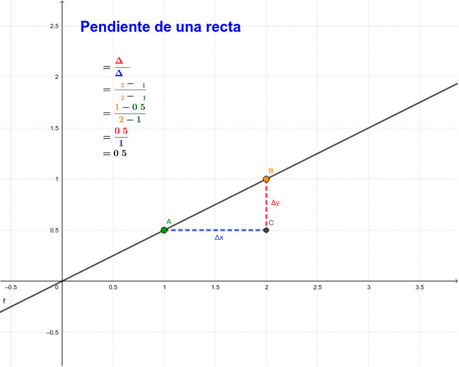

Por qué es imporante?
La importancia del concepto de pendiente en la Educación Matemática se debe a que es necesaria
para comprender y describir el comportamiento de funciones El comprender este concepto,
así como la linealidad, son clave para describir funciones no lineales, por ejemplo, cuadrática y
exponencial.
Más aún, el concepto de pendiente es fundamental para comprender el concepto de derivada en Cálculo